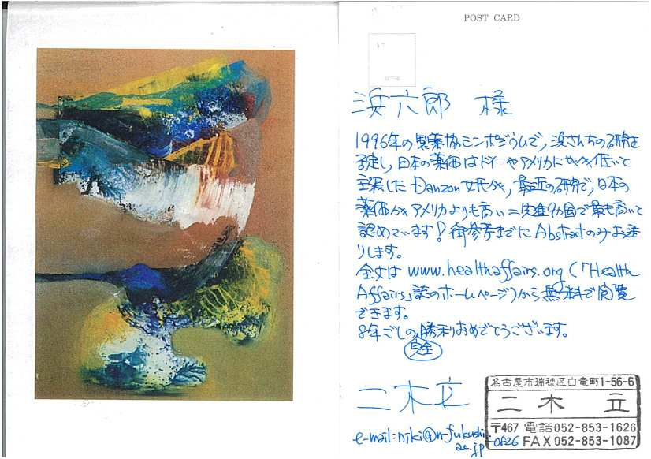

新聞の報道によれば、健康保険組合連合会（健保連）副会長で中医協元委員の下村健容疑者(73）ら2人が収賄容疑、日本歯科医師会（日歯）会長、臼田貞夫容疑者(73）ら５人が贈賄容疑で逮捕された。
下村氏は、われわれの健康保険で支払われる薬価や医療技術の価格を決める中医協に君臨していたボスといわれています。
私たちは、1994年から95年にかけて、薬価の国際比較とともに世界一の薬価の原因を調査研究しました。その結果を1996年「薬害はなぜなくならないか」に書きました（第８章：薬価のからくり：ｐ267-301、第９章：薬害を生む構造：p303-324参照）。
そのときに一番不思議に思ったのは、「中医協に委員を出してもいない製薬企業の意見が、どうして中医協の決定に反映されるのか」ということでした。
中医協（中央社会医療協議会）には、支払い側代表として各種健康保険組合の理事（下村氏もその一人）や労働組合の代表が入っています。また、診療側として医師会や歯科医師会、薬剤師会の代表、そして公益側代表として経済や法律関係の専門家が入っています。しかし、製薬企業の代表者は一人も入っていません。
「薬害はなぜなくならないか」（p310-）ではこのことを取り上げ、政治家の関与を重視して書きましたが、中医協委員のどの部分を介するのかよく分かりませんでした。
しかし、その不明の部分が氷解したのが、1998年に約2時間の生番組「ＢＳ討論」で下村氏と議論したときでした。目を瞑って聞いていると、薬の評価、あるいは薬価に対する彼の考え方は、「製薬企業の代表か？」と思えるほどでしたから、なるほどと納得できたのです。
たとえば、ある胃潰瘍用の新薬（プロマック顆粒）が効かないし害が大きいのに世界の標準薬（スクラルファート）より4倍も高いこと、こうした間違った評価が高薬価を生んでいる、という点を指摘したときなど、恐ろしい目でにらみ、むきになって反論するのです。
健康保険財政を預かるものとしては当然、その意見を尊重して薬価切り下げを図るべきなのに、その剣幕にビックリしました。これなら、製薬企業の代表は不要なわけだと納得ができたのです。
日ごろは高薬価には甘く、医師・歯科医師の技術料には非常に厳しいために、日歯側の窮余の一策が今回の事件につながったのではないでしょうか。
では、下村氏が日ごろから製薬企業寄りの発言をするのは、製薬企業との間にどのような関係があるのでしょうか。日歯との間の関係だけでなく、製薬企業との間の関係も調べて欲しいと、みなさんも思いませんか。
私たちが1994年から95年にかけて実施した「薬価の国際比較」では、日米英独仏の５カ国比較で日本が最高でした。しかもその高さがすごい。アメリカやドイツの1.3〜1.5倍はまだしも、イギリスやフランスとは、2.5倍〜3倍もするのです。なかには、イギリスの価格の10倍以上というのもありました。
世界的評価の高い歴史のある薬は外国並みで、新薬ほど開きが大きく、1994年に承認された新薬などは、イギリスやフランスの4倍も高価でした。
日本の製薬企業や日本の医療経済の学者も、この調査結果をまともに批判できませんでした。ところが、96年5月、製薬協がアメリカの学者（ダンゾン氏）を招き、日本よりもアメリカの薬価が高いということを言わせました。私も招かれて議論したのですが、私たちの調査は調査した薬剤名も方法もすべて公開しているのに対して、彼女は調査対象とした薬剤名を最後まで明かさない不透明なものでした。結局、世界的に評価された薬剤の価格はあまり変わらないけれども、新薬で日本は高薬価になっているという私たちの主張に、彼女は反論できなかったのです。
ところが、最近そのダンゾン氏が、米国の薬価より日本の薬価の方が15〜20％高いという結果を発表したのです。
ただし、最近発表したダンゾン氏らの調査方法をみてみると、患者が受け取る価格ではなく、メーカーの蔵出し価格です。日本では、最近、医師の薬価差益は非常に減りましたが、医薬分業が進行して、技術料と言う名の薬価差益が調剤薬局に入りますから、患者末端価格は、以前にも増して高価になってきています。そうした費用も含めて薬価を比較すれば、さらに国際的な高薬価がうきぼりになるのではないかと私は見ています。
薬価については、当ホームページの以下を参照ください。
「日本の薬価が世界最高」とのdannzon論文の存在を連絡頂いたのは、二木立氏（医師、日本福祉大学教授）です。
二木氏のご了解が得られましたので、その手紙を掲載させていただきます。貴重な情報のご連絡ありがとうございました。
なお、二木氏には第1回医薬ビジランスセミナーで、「医療費問題と薬価」と題して講演をして頂きました。
